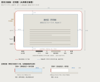

3.1文件
STL 单位 mm，已按打印方向平放，都检查过是封闭实体。DXF 是正视图（从屏幕正面看：天线和 Type-C 在左，按键在下），原点在外形左下角。
| 文件 | 给谁 | 内容 |
|---|---|---|
| master-frame.stl master-back.stl master-keys.stl | 手板厂 | 手板版中框、后盖、3 个键帽，一个零件一个文件 |
| fdm-print.stl | 自己打印 | FDM 版整套（中框、后盖、3 个键帽）排在一个文件里，可以直接切片，不用支撑 |
| acrylic-printed.dxf | 亚克力厂 | 方案 A（推荐）：透明亚克力 + 背面丝印白框。CUT 层切外形，PRINT_WINDOW 层是透光区（框内不印） |
| acrylic-cutwindow.dxf | 亚克力厂 | 方案 B：白色不透明亚克力，外形和开窗都切穿 |
| eink-case.scad eink-case-master.scad eink-case-fdm.scad | 结构工程师 | OpenSCAD 源文件。改尺寸只改 eink-case.scad；打开对应版本的入口文件，F6 渲染、F7 导出 |
CNC 手板厂一般要 STEP。OpenSCAD 导不出 STEP，可以让厂家从 STL 转，或者先做光固化手板。
3.2两个版本
| 项目 | 手板版 | FDM 版 |
|---|---|---|
| 用途 | 光固化 / CNC 手板，之后翻硅胶模复模（PU 真空注型） | 自己的打印机，0.4mm 喷嘴 |
| 键帽和开孔每边间隙 | 0.2（以后注塑可到 0.15） | 0.3 |
| 键帽开孔 | 圆孔 Ø4.0，翘板 16.4 × 3.6 | 圆孔 Ø4.2，翘板 16.6 × 3.8 |
| Type-C 舌头间隙 | 0.1 | 0.15 |
| 自攻底孔 | Ø1.6 | Ø1.7（FDM 打出来的孔偏小） |
| 翘板凸棱 | 0.6 × 0.3 | 0.8 × 0.4 |
| 电源键凸点 | Ø0.8 高 0.2 | Ø1.0 高 0.3 |
| 菜单键凹面 | 0.2 | 0.3 |
| 圆键底部 | 整圆 | 削平 0.2，侧躺打印时贴得住平台 |
两版键帽结构相同：法兰片下面和两端都是 45° 斜面，没有往下悬空的部分。
3.3亚克力面板

| 项目 | 方案 A（推荐） | 方案 B |
|---|---|---|
| 材料 | 透明 PMMA 1.5mm；想减反光可选 AG 防眩亚克力 | 白色不透明 PMMA 1.5mm（乳白 / 瓷白） |
| 加工 | 切外形；背面丝印白色，透光区不印 | 切外形和开窗 |
| 效果 | 屏幕被整块面板盖住保护，正面平整；侧面是透明切割面，透出背面的白色 | 正面和侧面都是实心白色；屏幕玻璃露在开窗里 |
| 文件 | acrylic-printed.dxf | acrylic-cutwindow.dxf |
- 外形：115 × 67mm、R4，公差 ±0.1。透光区 93.8 × 56.68mm，离左边 14.13、右边 7.07、上下各 5.16（正视图）。
- 丝印在背面：DXF 是从正面看的图，下单时备注"背印，图纸为正视图"，让厂家自己镜像。
- 白墨印 3 遍（或白 2 遍再垫一遍浅灰），写明"白色不透光"。只印 1 遍是半透的，会透出后面屏幕的 FPC、胶带和中框的影子。
- 想要方案 A 的侧面也是实心白，可以让厂家把四周切割面喷白封边，或者改用方案 B。
- 墨水屏不显示的边框本身是浅灰白色，透光区四周留的 0.5mm 和白框接得上，看不出一圈黑线。
- 两面保护膜到装配时再撕。
3.4手板与复模
- 发给手板厂：master-frame.stl、master-back.stl、master-keys.stl，加上结构页的叠层图和装配顺序。
- 材料：中框、后盖用 ABS 类 PU（耐温 70～80°C），白色原色或喷哑光白，和面板白框同色；键帽用硬一点的 PU（邵氏 D 80 以上），不然按久了会变形。
- 打印方向：中框前沿（粘亚克力那面）朝下贴平台，保证粘接面平。
- 复模：一套硅胶模一般能翻 15～20 件。中框和后盖各一套，3 个键帽可以放在同一套模里。
- 螺丝柱：PU 件直接用 ST2.0 自攻，拆装十来次没问题，牙滑了换 ST2.2 × 6。埋不了铜螺母：M2 铜螺母要 Ø5 以上的螺丝柱，现在的 Ø4.5 柱子外侧离壳外表面只有 0.05、内侧离屏幕玻璃只有 0.29。
3.5FDM 打印
先打试打件：在 eink-case-fdm.scad 里把 part 改成 "keytest"，导出中框底边按键那一段（44 × 6）加 3 个键帽，十几分钟能打完。装上试：键帽在孔里能自由滑、不晃，翘板压一头另一头不动。太紧把 CLR 加 0.05，太松减 0.05，再打整套。
| 零件 | 摆放 | 层高 | 墙 | 支撑 | 其他 |
|---|---|---|---|---|---|
| 中框 | 前沿朝下（已摆好） | 0.16 | 4 圈 | 不要 | 开孔都是 ≤17mm 的横向桥接；开"象脚补偿" 0.15，不然前沿外扩，亚克力对不齐 |
| 后盖 | 外表面朝下（已摆好） | 0.16 | 4 圈 | 不要 | 外表面贴纹理 PEI 板会有磨砂面 |
| 键帽 | 侧躺（已摆好） | 0.08～0.12 | 全实心 | 不要 | 加 3mm brim；速度 30mm/s、风扇 100%；多打一两套备用 |
- 材料：中框、后盖建议用 PETG。它没有 PLA 硬，但更韧：摔了是凹、不是裂，自攻螺丝拧几次柱子也不容易裂，70～80°C 才软。PLA 50～60°C 就开始软，充电时充电芯片 U1 上方的后盖会发热，别放在夏天的车里。键帽用 PLA 或 PETG 都行，PLA 的凸棱、凹面更清楚。
- PETG 参数：喷嘴 235～245°C、热床 75～85°C；风扇 30～50%，桥接 100%；外墙 ≤40mm/s、桥接 20mm/s；回抽比 PLA 多 0.5～1mm。光面 PEI 先涂固体胶隔离，不然粘太牢会撕坏板面。PETG 一般打得偏胖一点，换料后重打 keytest。
- 颜色：选"不透光白 / 哑光白"。普通白 PLA、PETG 偏透，1.5mm 侧壁在强光下会透出里面的 PCB。
- 自攻螺丝：ST2.0 拧到底就停，FDM 件滑牙后很难救。
3.6外购件
| 件 | 规格 | 数量 |
|---|---|---|
| 自攻螺丝 | ST2.0 × 6，沉头十字，本色不锈钢 | 3 |
| 尼龙螺丝 | M2 × 6 沉头尼龙，用在天线旁那个角；那个螺丝柱先用 M2 丝锥攻牙 | 1 |
| 双面胶 | 0.15～0.17mm 薄型（如 3M 9495LE），按亚克力背面白框形状模切或手裁，白色或透明 | 1 |
| 泡棉 | 0.6mm，屏幕背面到 PCB；屏背面缺角处另有支撑片 ST1、泡棉垫 ST2（见器件清单） | — |
3.7打样后要量的
- Type-C 插到底：接口前端离壳外表面约 2mm，有些线的插头塑料头短，可能插不到底。插不到底就在开孔外侧做一个 12.4 × 6.4、深 1.0 的沉台。
- 键帽手感：间隙合不合适，翘板压一头时另一头会不会一起触发，随手握着会不会误按。
- 面板对位：屏幕贴到亚克力后，透光区和显示区四边是否都留出约 0.5mm 白边；白框有没有透出后面的影子。
- 充电灯：插着线时从侧面能不能看清灯亮。
- CO2 响应：放在支架上时，CO2 读数响应是否明显变慢；慢的话在后盖通风槽和支架之间加间隙。
已知的下一版 PCB 改进：充电灯 LED1 离 Type-C 中心只有 6.35mm，外壳 v1 只能把灯窗偏开 2.3mm；下一版把 LED1 挪到离 Type-C 中心 ≥ 9mm，灯窗就能正对 LED。